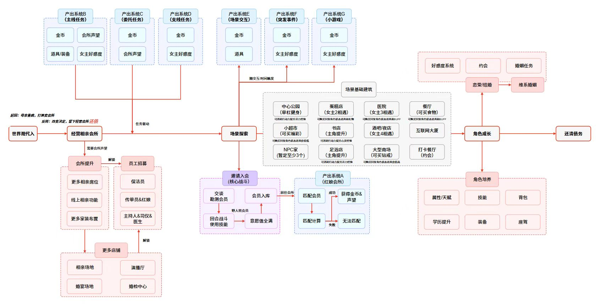

整体系统结构


设计问题
经营、探索、恋爱与角色成长，如何共同服务于一条持续推进的游戏主线？
图示产出
图示将玩法入口、资源来源、解锁依赖和成功/失败分支放到同一张结构图中，可用于讨论系统拆分与跨功能衔接。
关键关系
- 主线由经营相亲会所、场景探索、角色成长与债务目标连接，避免功能只作为孤立入口存在。
- 邀请入会串联交谈、回合战斗、意愿值和会员入库；会员再进入匹配计算，成功获得金币与声望，失败保留无法匹配分支。
- 会所提升解锁更多席位、线上相亲和布置；更多店铺与员工招募形成经营扩展路径。
- 主线、委托、支线、场景交互、突发事件和小游戏分别提供资源；角色培养与好感、约会及婚姻构成外围成长。